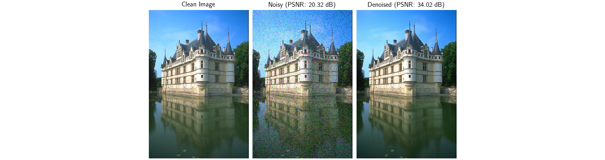
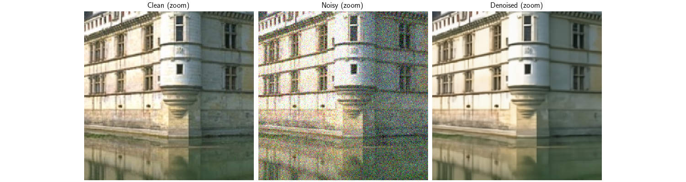

Note
New to DeepInverse? Get started with the basics with the 5 minute quickstart tutorial..
Distributed Denoiser with Image Tiling#
In many imaging problems, the data to be processed can be very large, making it challenging to fit the denoising process into the memory of a single device. For instance, medical imaging or satellite imagery often involves processing gigapixel images that cannot be processed as a whole.
The distributed framework enables you to parallelize the denoising of large images across multiple devices using image tiling. Each device processes different image patches independently, and the results are merged to produce the final denoised image.
This example demonstrates how to use the deepinv.distributed.distribute() function to create a
distributed denoiser that automatically handles patch extraction, processing, and merging.
Usage:
# Single process
python examples/distributed/demo_denoiser_distributed.py
# Multi-process with torchrun (2 GPUs/processes)
python -m torch.distributed.run --nproc_per_node=2 examples/distributed/demo_denoiser_distributed.py
Key Features:
Distribute denoising across processes/devices using image tiling
Automatic patch extraction and reassembly
Memory-efficient processing of large images
Key Steps:
Load a large test image
Add noise to create a noisy observation
Initialize distributed context
Configure tiling parameters
Distribute denoiser with
deepinv.distributed.distribute()Apply distributed denoising
Visualize results and compute metrics
Import modules and define noisy image generation#
We start by importing torch and the modules of deepinv that we use in this example. We also define a function that generates noisy images to evaluate the distributed framework.
import torch
from deepinv.models import DRUNet
from deepinv.utils.demo import load_example
from deepinv.utils.plotting import plot
from deepinv.loss.metric import PSNR
# Import distributed framework
from deepinv.distributed import DistributedContext, distribute
def create_noisy_image(device, img_size=1024, noise_sigma=0.1, seed=42):
"""
Create a noisy test image.
:param device: Device to create image on
:param tuple img_size: Size of the image (H, W)
:param float noise_sigma: Standard deviation of Gaussian noise
:param int seed: Random seed for reproducible noise
:returns: Tuple of (clean_image, noisy_image, noise_sigma)
"""
# Load example image in original size
clean_image = load_example(
"CBSD_0010.png",
grayscale=False,
device=device,
img_size=img_size,
resize_mode="resize",
)
# Set seed for reproducible noise
torch.manual_seed(seed)
# Add Gaussian noise
noise = torch.randn_like(clean_image) * noise_sigma
noisy_image = clean_image + noise
# Clip to valid range
noisy_image = torch.clamp(noisy_image, 0, 1)
return clean_image, noisy_image, noise_sigma
Configuration of parallel denoising#
img_size = 512 # Large image for demonstrating tiling
noise_sigma = 0.1
patch_size = 256 # Size of each patch
overlap = 64 # Overlap for smooth boundaries
Define distributed context and run algorithm#
# Initialize distributed context (handles single and multi-process automatically)
with DistributedContext(seed=42) as ctx:
if ctx.rank == 0:
print("=" * 70)
print("Distributed Denoiser Demo")
print("=" * 70)
print(f"\nRunning on {ctx.world_size} process(es)")
print(f" Device: {ctx.device}")
# ---------------------------------------------------------------------------
# Step 1: Create test image with noise
# ---------------------------------------------------------------------------
clean_image, noisy_image, sigma = create_noisy_image(
ctx.device, img_size=img_size, noise_sigma=noise_sigma
)
# Compute input PSNR (create metric on all ranks for consistency)
psnr_metric = PSNR()
input_psnr = psnr_metric(noisy_image, clean_image).item()
if ctx.rank == 0:
print(f"\nCreated test image")
print(f" Image shape: {clean_image.shape}")
print(f" Noise sigma: {sigma}")
print(f" Input PSNR: {input_psnr:.2f} dB")
# ---------------------------------------------------------------------------
# Step 2: Load denoiser model
# ---------------------------------------------------------------------------
if ctx.rank == 0:
print(f"\nLoading DRUNet denoiser...")
denoiser = DRUNet(pretrained="download").to(ctx.device)
if ctx.rank == 0:
print(f" Denoiser loaded")
# ---------------------------------------------------------------------------
# Step 3: Distribute denoiser with tiling configuration
# ---------------------------------------------------------------------------
if ctx.rank == 0:
print(f"\nConfiguring distributed denoiser")
print(f" Patch size: {patch_size}x{patch_size}")
print(f" Receptive field radius: {overlap}")
print(f" Tiling strategy: overlap_tiling")
distributed_denoiser = distribute(
denoiser,
ctx,
patch_size=patch_size,
overlap=overlap,
)
if ctx.rank == 0:
print(f" Distributed denoiser created")
# ---------------------------------------------------------------------------
# Step 4: Apply distributed denoising
# ---------------------------------------------------------------------------
if ctx.rank == 0:
print(f"\nApplying distributed denoising...")
with torch.no_grad():
denoised_image = distributed_denoiser(noisy_image, sigma=sigma)
if ctx.rank == 0:
print(f" Denoising completed")
print(f" Output shape: {denoised_image.shape}")
# Compare with non-distributed result (only on rank 0)
if ctx.rank == 0:
print(f"\nComparing with non-distributed denoising...")
with torch.no_grad():
denoised_ref = denoiser(noisy_image, sigma=sigma)
diff = torch.abs(denoised_image - denoised_ref)
mean_diff = diff.mean().item()
max_diff = diff.max().item()
print(f" Mean absolute difference: {mean_diff:.2e}")
print(f" Max absolute difference: {max_diff:.2e}")
# Check that differences are small (due to tiling boundary effects)
# The distributed version uses tiling with overlapping patches and blending,
# which can produce slightly different results at patch boundaries.
# These differences are typically very small (< 0.01 mean, < 0.5 max).
tolerance_mean = 0.01
tolerance_max = 0.5
assert (
mean_diff < tolerance_mean
), f"Mean difference too large: {mean_diff:.4f} (tolerance: {tolerance_mean})"
assert (
max_diff < tolerance_max
), f"Max difference too large: {max_diff:.4f} (tolerance: {tolerance_max})"
print(f" Results are very close (within tolerance)!")
# ---------------------------------------------------------------------------
# Step 5: Compute metrics and visualize results (only on rank 0)
# ---------------------------------------------------------------------------
if ctx.rank == 0:
# Compute output PSNR
output_psnr = psnr_metric(denoised_image, clean_image).item()
psnr_improvement = output_psnr - input_psnr
print(f"\nResults:")
print(f" Input PSNR: {input_psnr:.2f} dB")
print(f" Output PSNR: {output_psnr:.2f} dB")
print(f" Improvement: {psnr_improvement:.2f} dB")
# Plot results
plot(
[clean_image, noisy_image, denoised_image],
titles=[
"Clean Image",
f"Noisy (PSNR: {input_psnr:.2f} dB)",
f"Denoised (PSNR: {output_psnr:.2f} dB)",
],
save_fn="distributed_denoiser_result.png",
figsize=(15, 4),
)
# Plot zoom on a region to see details
# Extract a 256x256 patch from center
h, w = clean_image.shape[-2:]
y_start, x_start = h // 2 - 128, w // 2 - 128
y_end, x_end = y_start + 256, x_start + 256
clean_patch = clean_image[..., y_start:y_end, x_start:x_end]
noisy_patch = noisy_image[..., y_start:y_end, x_start:x_end]
denoised_patch = denoised_image[..., y_start:y_end, x_start:x_end]
plot(
[clean_patch, noisy_patch, denoised_patch],
titles=["Clean (zoom)", "Noisy (zoom)", "Denoised (zoom)"],
save_fn="distributed_denoiser_zoom.png",
figsize=(15, 4),
)
print(f"\nDemo completed successfully!")
print(f" Results saved to:")
print(f" - distributed_denoiser_result.png")
print(f" - distributed_denoiser_zoom.png")
print("\n" + "=" * 70)
- 
- 
======================================================================
Distributed Denoiser Demo
======================================================================
Running on 1 process(es)
Device: cuda:0
Created test image
Image shape: torch.Size([1, 3, 767, 512])
Noise sigma: 0.1
Input PSNR: 20.34 dB
Loading DRUNet denoiser...
Denoiser loaded
Configuring distributed denoiser
Patch size: 256x256
Receptive field radius: 64
Tiling strategy: overlap_tiling
Distributed denoiser created
Applying distributed denoising...
/local/jtachell/deepinv/deepinv/deepinv/distributed/strategies.py:476: UserWarning: No tiling_dims provided. Assuming last 2 dimensions: (-2, -1). If your layout is different, please provide tiling_dims explicitly.
warnings.warn(
Denoising completed
Output shape: torch.Size([1, 3, 767, 512])
Comparing with non-distributed denoising...
Mean absolute difference: 6.39e-04
Max absolute difference: 9.65e-02
Results are very close (within tolerance)!
Results:
Input PSNR: 20.34 dB
Output PSNR: 34.01 dB
Improvement: 13.67 dB
Demo completed successfully!
Results saved to:
- distributed_denoiser_result.png
- distributed_denoiser_zoom.png
======================================================================
Total running time of the script: (0 minutes 14.552 seconds)